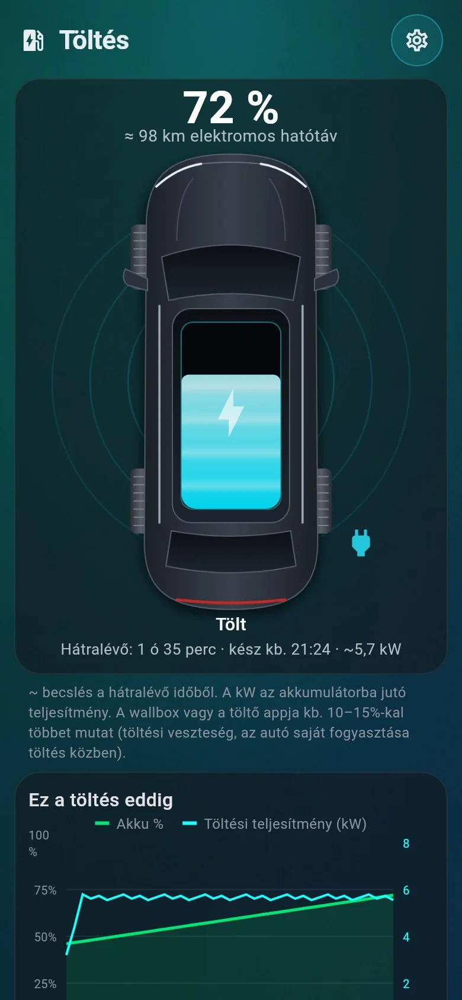
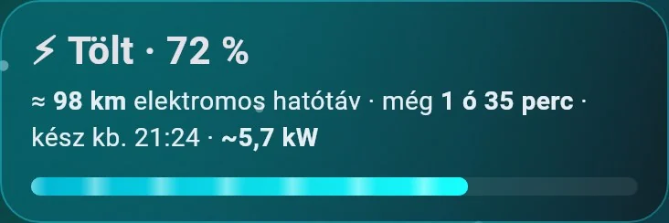
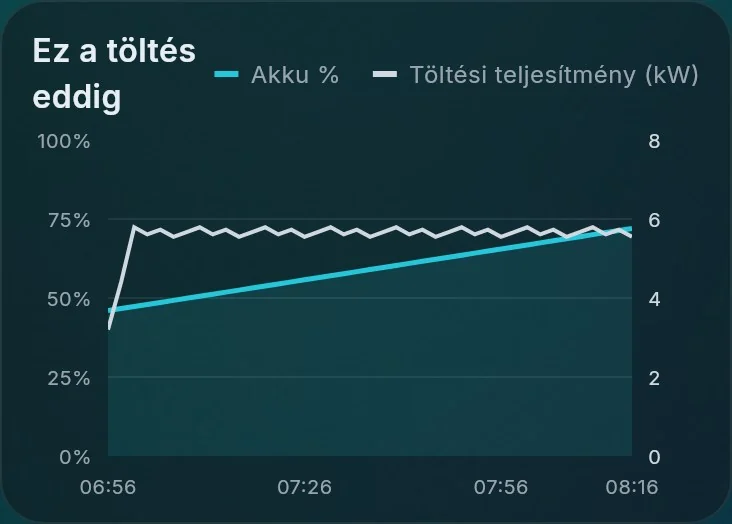
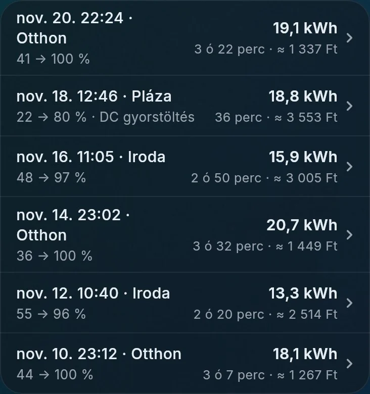
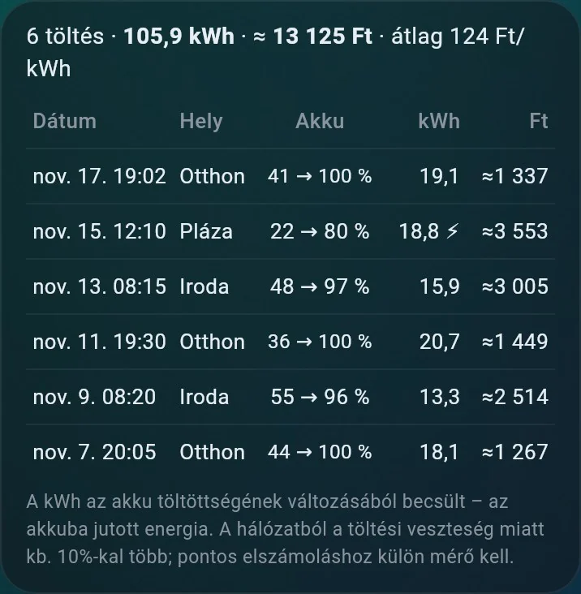

Töltés
Pontosan tudod, hol tart a töltés.
Élő teljesítmény kW-ban, hátralévő idő és minden töltés naplója – otthon a fali töltőn vagy nyilvános töltőn.


Élő teljesítmény és hátralévő idő, rögtön a kezdőlapon.
Amint az autó tölteni kezd, a kezdőlapon megjelenik a töltöttség, a hátralévő idő, a várható befejezés és a töltési teljesítmény. A hátralévő idő DC-töltésnél is látszik, a beállított célodig számolva.
- Teljesítmény kW-ban – az akkuba jutó energia. A fali töltő kb. 10–15 %-kal többet mutat a töltési veszteség miatt.
- 2 percenként frissül – amíg az autó tölt.
- Értesítés – amikor a töltés befejeződött.


Előbb az élő görbe, aztán a napló.
Töltés közben az akkuszint és a kW élő görbét rajzol. Utána minden töltés a naplóba kerül: dátum, hely, akku mettől meddig, betöltött energia, időtartam és költség, AC vagy DC. Látod az autó töltési ütemezését is, és ahol az autód engedi, az appból leállíthatod a töltést. Ha megadod az autód töltési veszteségét (Beállítások → Autó → Árak), a töltés költsége a hálózatból vett energiával számol – és a fali töltő mért kWh-ját is beírhatod. A töltő saját kWh-ja megadható – a költség ehhez igazodik; becslés az akku használható kapacitására és a holnap reggeli hatótávra hidegben. Töltés most: a bedugott, ütemezésre váró autó azonnal tölt, utána visszaáll az ütemezés. Okos ütemezés (választható): kéttarifás áramnál az olcsó sávban, indulásra kész.

Hónapról hónapra, exportálható.
A havi kimutatás helyenként összesíti a töltéseket – energia, költség és átlagos kWh-ár –, és CSV-be vagy PDF-be exportálja.

Kövesd az app megnyitása nélkül.
iPhone-on a töltés Live Activityként fut a zárolt képernyőn és a Dynamic Islandben. Androidon élő értesítésként látszik. A widgetek szem előtt tartják az akkuszintet.
- Feltöltve a célodig – kihúzhatod, amikor szeretnéd.
- Idő előtt leállt – a töltés a célod előtt megállt, a kábel még bent van.
- Bedugva, de nem tölt – a kábel bent van, és nem történik semmi.
Próbáld ki a saját autódon.
A Carmeo ingyenes. Csatlakozz a nyílt tesztcsoporthoz iPhone-on vagy Androidon.